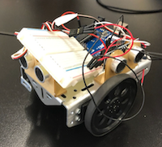

Robotics
The main goal of the Robotics unit is to incorporate the knowledge learned from the Programming and Hardware unit to construct a robot and code it so it is able to maneuver through a maze. Students used a previously made robot and constructed the maze out of a piece of plywood as the base and cut up pieces of cardboard as the walls. Students also had to learn how to use Arduinos and learned a bit of engineering with wiring the Arduino.
